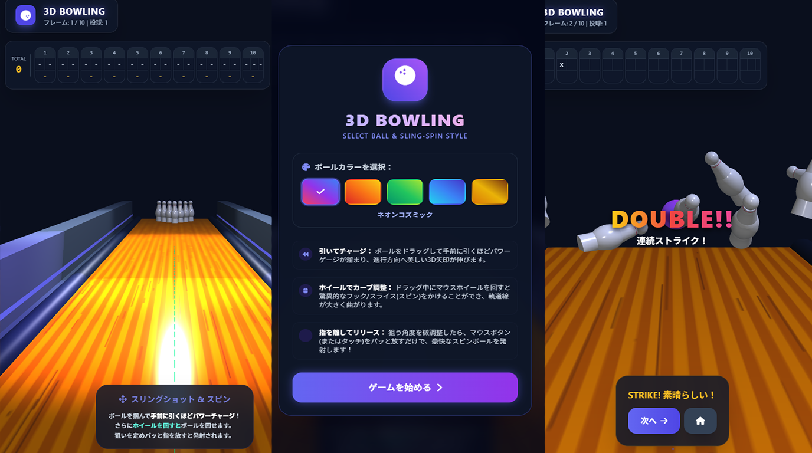
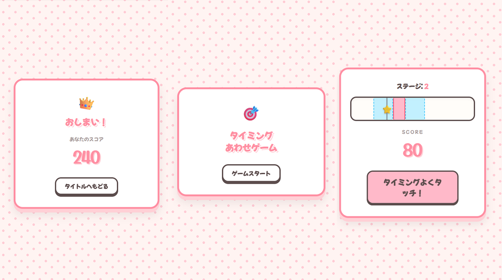
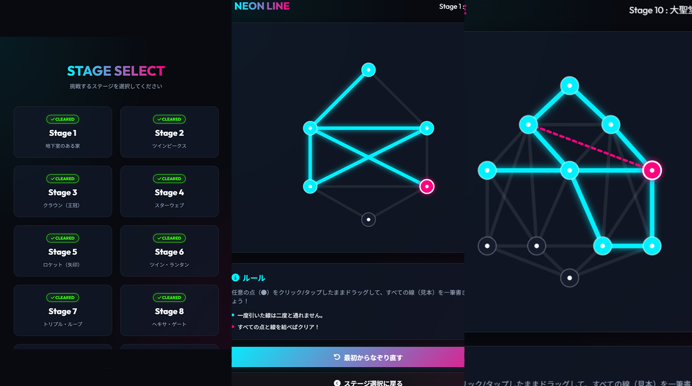

HTMLとJavaScriptで作ったゲームまとめ

マウスでドラッグしてボールを投げるボウリングゲームです。
左右にスライドして角度を決めて、ホイールでカーブをつけることができます。
全部で10ゲームあります。
・直感的に投げられる操作
・カーブで戦略性アップ
・10回遊べるシンプルなルール
https://github.com/AyameOtani/JavaGame.git

動くバーをタイミングよく止めるゲームです。
赤い場所は30点、青い場所は10点です。
・ステージごとにスピードが上がる
・シンプルでわかりやすい画面
・スコアで成長がわかる
https://github.com/AyameOtani/ClickGame.git

カーソルで線をなぞってゴールまで進む一筆書きゲームです。
・線から外れると最初からになる
・クリアしたステージがわかるようにした
・一筆書きのルールを再現
https://github.com/AyameOtani/DrawGame.git